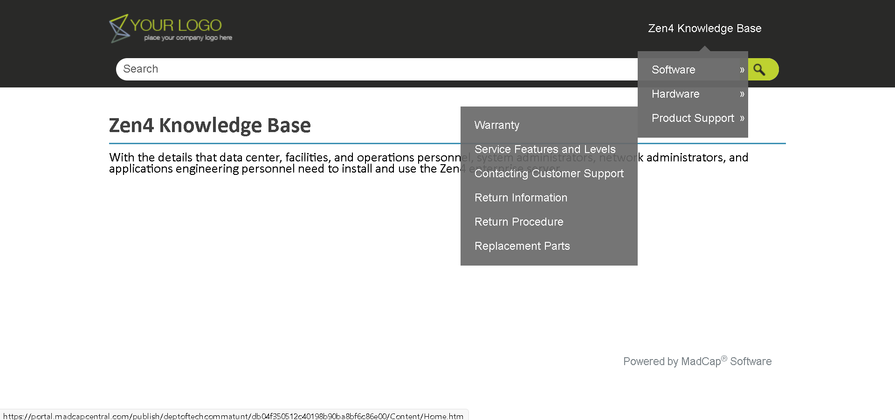

Zen4 Knowledge Base
Situation
In my TECM 5191 class, I worked in a group to edit content and use single-sourcing methods to publish that content. I was responsible for the HTML portion.
Task
The main goal of the the project was to practice single-sourcing through MadCap Flare. We were responsible for outputting two PDFs and one HTML page. These publications were to consist of instructions for a hypothetical server called “Zen4”. Within these instructions were the “Hardware”, “Software” and appendices (labeled as “Product support” online).
Action
My main duty for this project was to isolate the software and hardware guides into two different sections of navigational tabs, along with a product support section. These were all located under the “Zen4 Knowledge Base”.
Result
This led me to create a functional, online knowledge base that paired with two printable and instructional PDFs. My end product allowed users to navigate swiftly through the guides by using navigational arrows and linked table of contents. This enabled users to enhance their ability to find the relevant information they needed without the usage of printable instruction guides.